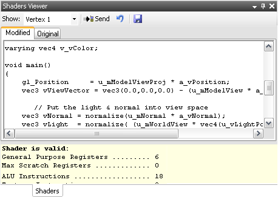

The Shaders Viewer displays shaders belonging to the currently selected program from the Programs Browser.

Basic usage:
• See the tutorial on optimizing GLSL shaders.
Toolbar options:
Drop-down for selecting which vertex or fragment shader to edit.
Sends the modified shaders to the connected device, overriding the original GPU program loaded by the mobile application.
• If the modified shader still compiles and links correctly, and overrides are globally enabled in the Programs Browser, then clicking "Send" will cause the mobile application to begin executing using the modified shader.
Reverts all changes to this program.
• Clicking this button will discard all modifications made to all shaders attached to the program being displayed. The mobile application will also stop overriding the program and return to using its original shaders.
Exports the selected shader's text to a file.